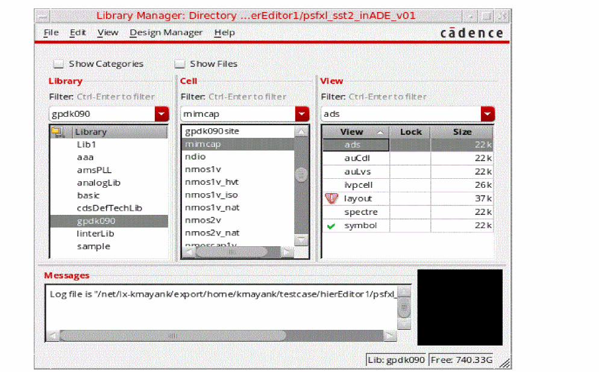

Displaying the Update Needed Icon
The update needed icon is displayed in the Library Manager window in the following scenarios:
- If the DM status of view files is checked in within your workarea, and an update needs to be applied in the cellview.
-
If the DM status of view files is checked in within your workarea but is checked out by another user in another workarea, and an update needs to be applied in the cellview.
In this case, a different icon is displayed if either the update is not needed, or the update needed feature is not available in your DM.
To update the content in the cellview, you need to select the Design Manager – Update option from the Library Manager window, or run the gdmupdate command from the shell terminal.
After the update is successful, the updated needed icon is replaced with either the checked in icon, or the checked out by others icon in the Library Manager window.
For more information on the related GDM command, see gdmstatus.
For more information on the related GDM SKILL function, see gdmstatus.
Check In, Check Out, and Cancel Check Out Using the DM Status Form
To save you from having to run the separate Check In, Check Out, and Cancel Checkout options in the Design Manager menu, these actions can also be performed in the DM Status form.
In the DM Status form, you have the ability to perform these actions for any files shown in the list, which are either from the full list, or from one of the applicable filtered lists.
These check in/out actions, along with the Refresh Status command, are also contained in a common tabbed structure in the Check In, Check Out and Cancel Checkout forms. However, when a specific check command is selected, the other command tabs becomes unavailable. For example, if you choose the Check In menu option to display the Check In form, then the Check Out and Cancel Check In tabs contained therein gets disabled. This does not however apply to the Status form which allows you to invoke all of these actions.
When you perform a check in, check out, or cancel check out from the DM File Status form, a Substitute DM Command message gets displayed requesting confirmation of that action. You can however to choose that you do not want this message to be re-displayed in future. In doing so, the .cdsenv file gets updated and your preference registered for future actions in this area.
Related Topics
Return to top